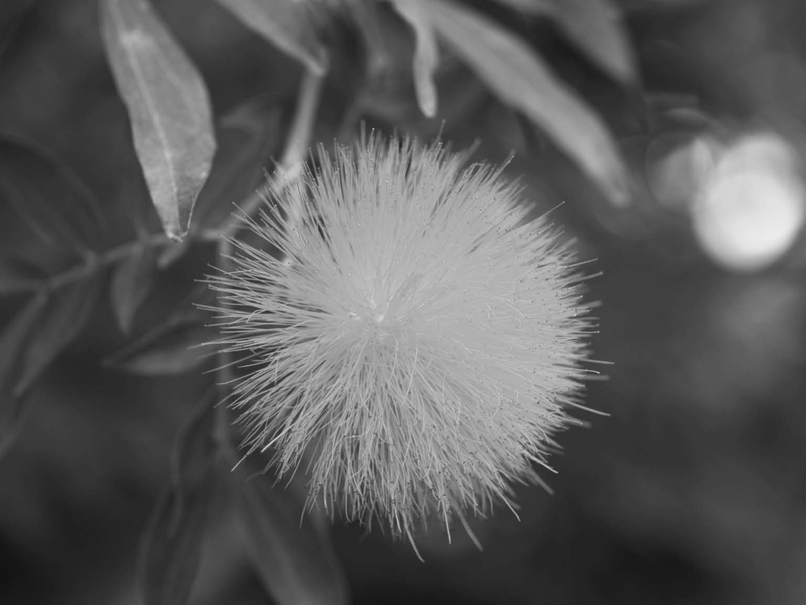
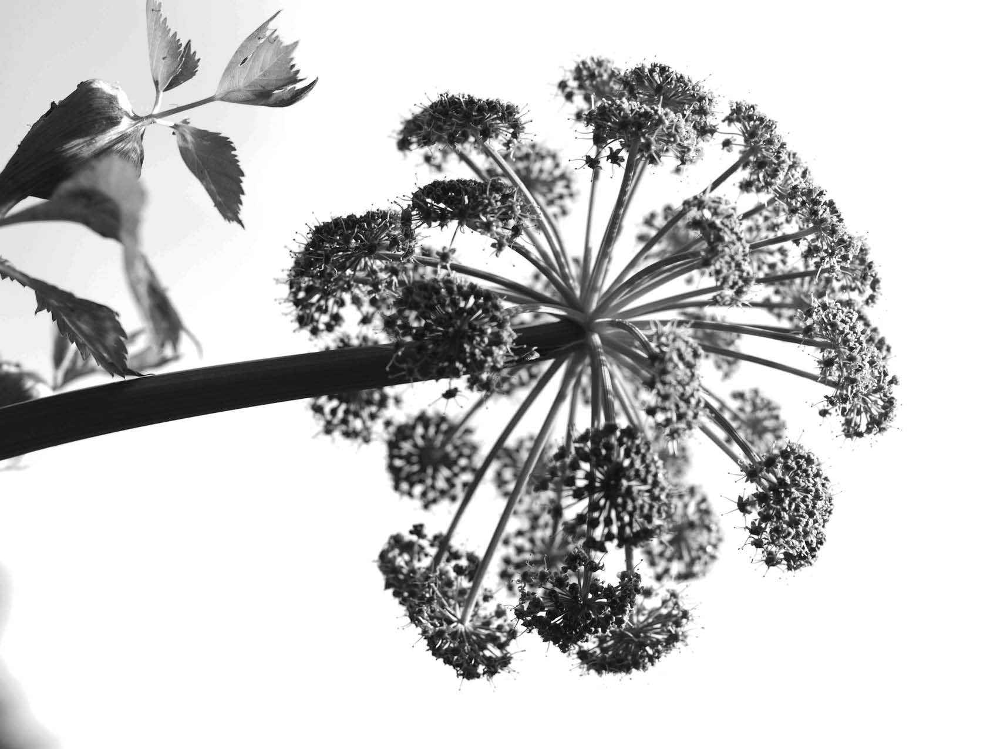
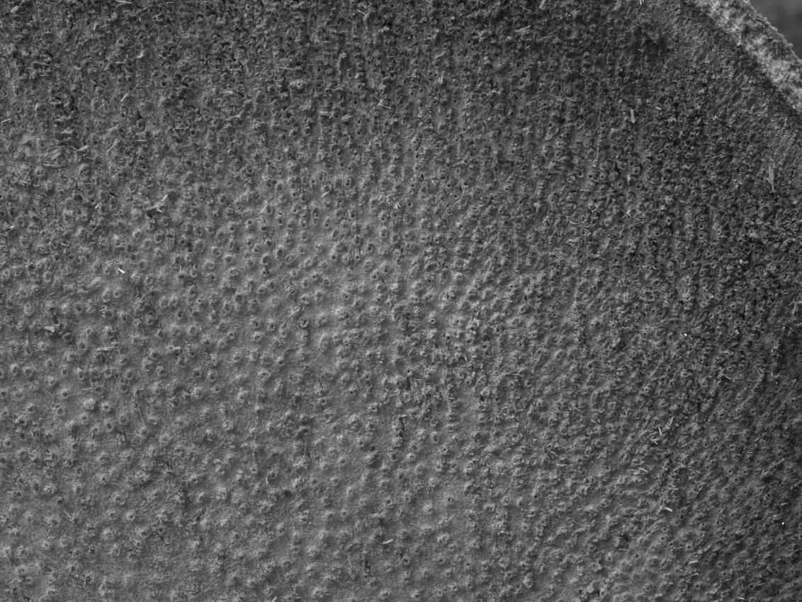
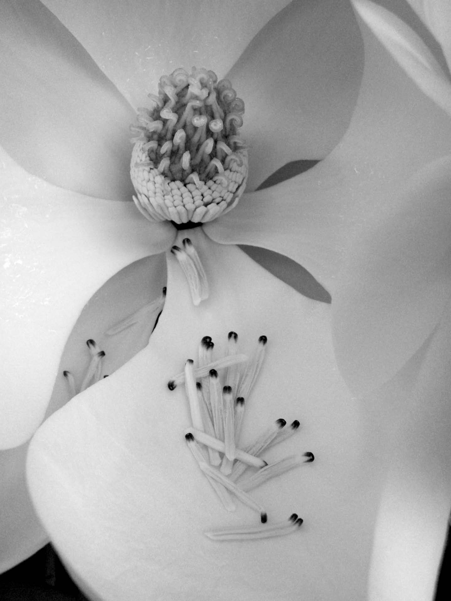

给植物命名是最古老的职业。如果你翻开《创世记》的第二章第19节，上帝把他创造的作品带给亚当，表示自己已经做完分内之事，现在轮到亚当来为它们命名。不管你如何看待这段历史叙述的真实性，它着实表明圣经的作者已经意识到，如果他想要继续讲述故事，植物就必须有名字。亚当的任务完成得很快，因为仅仅三节经文过后，上帝就把他当作了闲暇时的玩物。亚当能够很快地完成这项任务是因为一切都是从零开始，而且世界上只有他一个人。
如今的情况要复杂得多，因为许多土著居民都会给植物命名，并且互不参考。所以白金汉郡的牛眼菊 [2] 被奇尔特恩丘陵另一侧的牛津郡称为月亮菊。在德国，白睡莲有108种名字。在英语中，“百合”（lily）这个词本身被广泛应用于诸如睡莲、马蹄莲、铃兰和白百合花等多种植物。其中只有白百合花才是真正的百合。这些俗名有一个优点，它们都是当地语言，因此更容易被人记住。这一点非常重要，比如颠茄在英语中就被叫作“死亡夜影”。然而，这个名称在法国毫无意义，在那里同样的植物有着不同的名字。我们所面临的问题是，在人们到处旅行、相互交谈的世界里，植物必须有一套世界公认的名字。伟大的全球植物名称编目员林奈曾说过：“没有永久的名称，就没有永久的知识。”
图12 依据不同的生长地区，牛眼菊有许多不同的英文名字
多亏了林奈（以及其他分类学家），我们真的拥有了永久的名称，这就是以拉丁语（或希腊语）命名的双名法学名。拉丁语和古希腊语的伟大之处在于它们是与政治无关的语言，因此不会有人出于民族主义的理由进行控诉。它们也不会像其他语言那样继续进化。如果你懂一些拉丁语或希腊语，那么你就可以开始欣赏植物命名的描述性质了。朱缨花（Calliandra haematocephala ）是一种豆科植物，它的花朵紧凑生长成半球状。每朵花表面上看起来都是由雄蕊构成的，所以整个花序看上去就像一个粉扑，这也是它常用名的由来 [3] 。朱缨花的拉丁语学名指“美丽的雄性部分”，这和粉扑花一样好记，但这也确实使卡琳德拉（Calliandra）成为一个不适合女孩的名字。人们也确实有些同情中国人，因为许多中国植物都是以外国人的名字命名的。例如，十大功劳（Mahonia fortunei ）是以宾夕法尼亚州的一名园丁和一位苏格兰植物标本采集者的名字而命名的。

图13 朱缨花的花看起来是由许多雄蕊构成的，因此它的拉丁名意为“美丽的雄性部分”
现在，学术界已有条例规定了植物的合法命名。首先，你要检查这种植物是否已有名称。在你确定它是一种新的植物物种后，你可以用拉丁语为其命名并对其进行描述，虽然2011年的国际植物大会决定拉丁语描述不再是强制要求。其次，你需要制作一份干燥的压制标本，并将其放置在可获得永久保存的标本室里。最后，当你在同行评议的期刊、博士论文或类似论文中发表植物的名称及其描述时，你需要说明该植物标本的存放地点，这样植物学家就能在未来的至少350年内来查看你所命名的实际植物。尽管植物命名具有相关法规，但人们对已发表名称的审查不够充分，因此，每个开花植物物种平均有两三个合法名称。这些名称被称为异名，而使用最为广泛的名称通常会成为公认的名称。
如果和来自世界各地的植物学家交谈，你会发现许多命名系统的存在，而这些命名绝对不是像儿童洗礼名一样的随机分配。例如，在中国，人们把所有的木兰称为辛夷花。在新西兰，朱蕉（Cordyline fruticosa ）在毛利语中被称为Ti植物，其不同的品种则被称为这个Ti、那个Ti和其他Ti。双名法是许多方言命名系统的共同特点。当人们为自己在周围看到的植物命名时，会凭直觉把相似的物种归到同一类。我们能够在被认为是现代植物学开端的一本书中发现这一点，那就是泰奥弗拉斯托斯在大约2 300年前出版的《植物探究》。
泰奥弗拉斯托斯记录了他对植物的观察，并在这个过程中根据植物的外形对其进行分类。例如，他这样描述一束植物：花朵都从同一个点长出，有许多全裂叶在花柄的基部紧紧地围绕茎而生长。这些都是伞形植物或者说是伞形科（Apiaceae）的成员。这本书在1644年仍作为教科书而出版，并且还有翻译本和复印本可供使用。植物学的研究一直持续到希腊和罗马帝国，在公元1世纪中叶，狄奥斯科里迪斯出版了《药物论》（De Materia Medica ）。这部作品直到17世纪都还在使用中。它介绍了狄奥斯科里迪斯在药物中所使用的植物，但这些植物是按其形态特征和药用特性而进行分类的。（在后文中我们将看到这两种特性经常融合在一起。）

图14 豕草的头状花序。豕草属于一类叫作伞形科的植物，而伞形科植物自公元前3世纪就被人们所认识
随着欧洲文艺复兴的发生和旅游业的指数增长，人们对植物本身重新燃起了兴趣，而不仅仅是为了它们的实用价值。许多植物志是在15世纪及以后编纂出来的，这些书是功利主义分类的极佳案例。我们现在仍然能够看到这些非正式的类别。在花园中，我们根据植物所需的条件（岩石花园、水上花园、林地花园等）或它们的颜色（希德科特庄园的红色边界或者西辛赫斯特城堡的白色花园）对其进行分类。我们有蔬菜园、药草园和果园。在其他社会中，我们可以看到食用植物、纤维植物、有毒植物等类别。这些分类显然是有帮助的，而且永远不会消失，但它们并非包括所有植物，并且也不是唯一的分类方式，因此一种植物可能会出现好几次。
早期的植物学家们，例如瑞士的博学家康拉德·格斯纳（1516—1565），开始描述他们在周围看到的所有自然世界。格斯纳是一位一丝不苟的工匠，如今保留下来的注释画稿和木刻展示出他对于细节异乎寻常的关注。与当时的其他植物学家不同的是，格斯纳采用了他能观察到的每一个特征，而非基于单个特征来对植物进行分类。这种对于发现某种本质特征的痴迷与亚里士多德哲学有着直接的联系，并且一直在植物分类中保持着卓越地位，直到约翰·洛克（1632—1704）引入了“观察是通向知识之路，我们生来一无所知”的思想。约翰·雷（1627—1705）就是深受洛克影响的人之一。
分类学（taxonomy）就是把生物进行分类的科学（taxis 在希腊语中意为顺序或排列），而约翰·雷正是现代分类学之父，也是英国诞生的第二位伟大的博物学家。他同样喜欢摆弄植物、动物和岩石。他对那些已经不复生存的动物化石深感困扰——他称之为“大自然的游戏”。然而，尽管雷有着强烈的宗教信仰，他还是制定了分类学的基本规则，并自此以来构成了所有分类学的基础。
雷是第一个定义“物种”概念的人。这在如今看来似乎毫不惊奇，也不值得注意，因为我们在日常交流中就会使用“物种”这个词，因此假定这个词语一直具有它的定义和含义，但在雷的时代并非如此；事实上，即便在今天，“物种”这个词仍然有20多种定义。物种是分类学的基石，也是生物学的通用概念，因此它的定义至关重要。雷的理念认为：
图15 斯塔福德郡的米德尔顿大厅，约翰·雷离开剑桥后曾在此工作
因此，物种是一组相似的个体，它们可以自由杂交并产生与亲本相似的后代。这一生物学定义至今仍被许多人接受，并在许多考试中得到引用。当你试图将这种定义应用到兰花、蒲公英或是其他植物上时，其中就存在着明显的问题，因此一个更为简单可行的定义就是：“物种是一组个体，它们共有一套独特但可以复制的特征。”
因此，雷认识到，如果想要维持某个物种内部的自然变异，这个物种就应该通过种子进行繁殖。这是真正的预言，因为这距离孟德尔发表他的遗传学（以及变异）研究还有200年，距离英国皇家植物园邱园确立千年种子库计划并以种子的形式来保存世界上25%的植物物种还有300年之久。然而，雷对分类学的最大贡献来自他的主张（遵循洛克的原则和格斯纳的实践），即如果想达成自然分类，你必须采用你观察和/或测量到的每个 特征。你不应该无缘无故地忽视任何特征。他的观察受到当时的显微镜分辨率的限制，但他的研究代表了植物分类学的一个转折点。（值得注意的是，雷及其同时代科学家的自然 分类亦反映了造物主 的计划。）
他摒弃了最早把植物划分为草本和木本的分类方式。他声明，所有的开花植物都专属于两大类植物的其中一类，而他将这两类植物称为单子叶植物和双子叶植物。他将单子叶植物的特征描述为：种子具有一片子叶；花部的基数为三；叶片具有平行叶脉；茎内的维管束组织呈分散排列；根为不定根。另一方面，他将双子叶植物的特征描述为：种子具有两片子叶；花部的基数为二、四或五；叶片具有主脉和横向分支构成的网状叶脉；茎中的维管束组织沿着茎的外缘呈环状排列；根是永久性的，具有一个存留的主根以及许多侧根。直到1998年，单子叶植物和双子叶植物的区分在植物分类学中一直存在，我们必须提到的是，由约翰·雷所定义的单子叶植物类别仍然存在。雷采用他所能观察到的每一种特征的进一步结果就是，他也开始把植物归入我们至今仍在使用的科这一分类单位中。例如，紫草科就是雷所描述的一个类群，尽管他没有采用“科”这个术语。

图16 棕榈的茎展示出单子叶植物典型的维管束组织
约翰·雷绝不是当时唯一的分类学家。他定期与巴黎植物园的约瑟夫·皮顿·德·图尔纳弗（1656—1708）通信。作为一位分类学家，图尔纳弗是以草本植物和木本植物进行分类的，但是通过观察花的结构，他在物种的上一个分类单位层面（也就是属）进行了大量的整理。这为卡尔·林奈（1707—1778）引入针对每个物种的通用拉丁语双名创造了条件。在实地调查中，林奈发现这些冗长、详细、描述性的多词学名非常烦琐。他建议保留图尔纳弗提出的属，但要把其余的名称缩减为一个希望能有助于识别或记住这种植物的昵称。1753年，他出版了《植物种志》（Species Plantarum ），这标志着合法学名的开始。他用一个拉丁语双名以及自泰奥弗拉斯托斯和狄奥斯科里迪斯以来就应用于该植物的所有拉丁语多词学名列出了他所知晓的每一种植物。
有趣的是，在林奈的四本自传中，他认为1753年出版的《植物种志》不应算作他的遗产。对大多数科学家来说，这足以成为一个人的遗产，但林奈确信自己已经在1735年出版的《自然系统》（Systema Naturae ）中所描述的性系统分类中找到了完美的植物自然分类。他完全按照植物所拥有的雄性和雌性器官数量来进行分类。他的著作非常生动有趣，也许他的出发点是让人同时受到启发和震惊。他的性系统分类从来没有被社会普遍接受，但如果你想鉴定一种植物的话，这种分类方法是有用的。然而，这的确表明将植物分类成木本植物和草本植物的方式已经不复存在。
林奈在二十多岁的时候就想到了采用这种方法对植物进行分类。他试图把植物从上到下进行分类。这时在你检查面前的所有物种之前，你要使用的特征就已经被定下来了。21世纪的大学生也经常在做同样的事情。另一方面，约翰·雷把他已知的所有植物都用非常完整的描述归类到物种，当你这样做的时候，植物的属和科几乎会自动选择植物；所以自下而上进行分类会更好。
我们当前的分类系统的下一步进展并不是由林奈，而是由安托万·罗兰·德·朱西厄推动的，他将林奈、图尔纳弗和其他人总结的属归类到科。这些归类在1789年的发表标志着合法科属命名的开始。
随着19世纪的开始，植物界已经被划分为物种，物种归类为属，属归类为科，科归类为目，目归类为纲，纲归类为门，最后门归类到界。这种分类等级的层次结构是针对不断增加的数据量的一种清晰而简单的梳理方法。当植物猎人们开始把植物带回邱园、爱丁堡等地时，这些新物种就可以被插入到系统中。每个物种都有自己独特的位置，在每个层级中都能归到某一类群。这使得植物的识别更加容易：要么通过询问一系列问题，比如这种植物是单子叶植物还是双子叶植物，来缩小选择范围；要么通过识别植物所属的科来进行鉴别。在植物界中，科是一项极其实用的分类层级，因为兰科、菊科、豆科、伞形科等多种科都很容易辨认。
然而，随着很多人开始怀疑物种的恒定性，一场革命也正在酝酿之中。有一种信念认为，世界上的物种是按照造物主的计划而固定不变的，它们也不能发生改变。这又回到了约翰·雷对化石及其他事物的担忧上。林奈发现许多植物展示出的特征是另外两种植物特征的混合体。他经常给这些植物起一个“hybridus ”（杂交）的特殊绰号［例如，车轴草属植物（Trifolium hybridus ）仍然生长在林奈和学生一起采集植物的路线上］。如果所有的物种都是上帝在创世记的第一天创造出来的话，又怎么会出现杂交物种呢？林奈很巧妙地解决了这个问题，认为上帝创造了属，而自然创造了物种。
作为牧师的儿子，林奈或许知道何时该低调行事。然而，巴黎植物园的让-巴蒂斯特·拉马克（1744—1829）等人开始公然考虑物种会随着环境的变化而变化。拉马克受到有些人不公正的嘲笑，但达尔文和其他人给了他应得的荣誉。他是那些踢了进化的马蜂窝、为进化论软化科学世界的勇敢者之一，该理论在查尔斯·达尔文的第一版《物种起源》中得到了精辟的概括。
这本书应该成为所有生物专业一年级学生的必读书目，直到这些学生认真读完这本书后（在关闭i-pod的情况下），学校才应允许他们开始学习学位课程。这个看似严苛的想法的原因在于，达尔文和雷一样，也是一位博物学家，同样在家里钻研植物、动物和岩石。他的写作风格至今仍是科学阐释的典范。“激发、联系、揭示”是保护教育的准则，这也正是达尔文所执行的。当你读到《物种起源》的第十三章时，你已经完全被达尔文的思维方式所吸引。
第十三章与我们本章所介绍的内容有关，因为达尔文在这部分内容中讨论了物种的分类。他认为，如果他关于生物在进化中会发生改进的观点是正确的，那么就非常有助于解释我们将生物划分成这种嵌套等级的层级系统的事实。《物种起源》中唯一的插图就是分叉树——系统发育学的时代已经开始。达尔文认为，物种可以归入属，因为它们在过去的某个时间点曾拥有一个共同的祖先 ，而你对共同祖先的溯源越深，你所处的等级层次越高——系谱近似 。分类系统并没有证明进化已经发生，但是达尔文提出的进化系统解释了我们为什么可以按照当前的规律进行分类。突然间，自然分类 的含义就发生了改变。分类学家不再试图揭示造物主的计划；现在他们正在重演进化史。这本身就是对达尔文理论的一大反对意见，因为尽管人们相信造物主是有计划的，但进化却没有计划，这让人们感到害怕。
随着19世纪的继续前进，邱园等地的植物标本室中的植物数量不断增长，分类也随之发生调整并得到完善。1862—1883年间，乔治·边沁和约瑟夫·胡克爵士出版了自己的植物分类著作。在开花植物中，他们辨别出了单子叶植物和双子叶植物。在双子叶植物中，这些植物首先被分成三大类：花瓣彼此分离的植物、花瓣融合成管状的植物以及看起来没有花瓣的植物。在单子叶植物中，这种划分则基于各种各样的特征，例如花朵是五颜六色的还是棕色膜状的、种子是不是很小等。边沁和胡克的分类系统在鉴别植物的目的上十分实用，但他们没有试图揭示进化的规律，尽管胡克经常与达尔文通信。也许因为进化论实在太有争议了。
《物种起源》的出版为系统发育学的创立打开了大门。德国博学者恩斯特·海克尔（1834—1919）常常被认为创造了“系统发育”（phylogeny）这个术语。系统发育是一种进化分类，并且以分叉树的形式进行绘制，每个末端分支则代表一个类群。希望有一天我们能为所有开花植物建立起系统发育史，那么这个分叉树将有大约35万个末端分支，而每个末端分支都代表一个物种。海克尔的分叉树是基于他和其他人利用日益精密的显微镜所观察到的形态而绘制的，所以他们所使用的证据从本质上而言与雷及其同事所能得到的证据相似。
在20世纪，一种新的可能性出现了。随着1952年染色体作用和DNA结构的发现，以及随后遗传密码的破译，人们开始怀疑事情的本质是否如同亚里士多德所写的一般。我们是否有可能找到一段对每个物种成员都独一无二的DNA ？我们是否能够利用从两个不同生物体中提取出的DNA片段中的碱基序列差异来确定它们的系谱近似关系呢？事实上，这是两件不同的事情。前者是鉴别，后者是分类。在这两个问题都没有得到回答之前，另一项技术革新打破了分类学的现状，这就是电子显微镜的发明，它打开了一个装满新特征的盲盒。
在电子显微镜下，最美丽的植物结构之一是花粉粒外部的图案。这就是我们在本书中多次提到的孢粉素。用电子显微镜拍摄的照片不仅揭示了特定物种所特有的图案，而且还揭示出花粉粒有许多萌发孔，当柱头面给出水分后，花粉管便通过这些萌发孔进行生长。萌发孔的数目从一个到几个不等，但通常是一个或三个。这是一项非常重要的特征，因为它帮助我们解决了一个越来越尴尬的问题。
随着电子显微镜所揭示的结构以及DNA序列（即分子数据）的增加，规则发生了一个非常重大的转变，那就是曾经和现在的单系性原则。单系类群指的是包括一个共同祖先的所有后代在内的一个类群。换句话说，一个单系类群中的所有分类单元都拥有一个共同的祖先，而这个类群必须包括该共同祖先的所有后代。单系性可以应用于每个分类层级。所以，所有的生物体会形成一个单系类群，因为生命发生了一次进化。植物（按照本书的定义）是一个单系类群，而陆生植物、种子植物、开花植物、单子叶植物、兰花等等也都是单系类群。没有哪种特征的新证据能够动摇约翰·雷在300多年前所描述的单子叶植物的单系地位。然而，双子叶植物的地位却并不乐观。
当达尔文开始思考特定系谱的相关性时，他遇到了一个问题。尽管种子植物（裸子植物和被子植物）似乎是一个单系类群，也就是说种子只经历了一次进化，但是它们的共同祖先是什么样的？被子植物的起源又是什么？在写给胡克的信中，他将此称为一个“令人憎恶的谜”，而这个谜至今仍未解开。试图揭示真相的一种方法就是找出最早的开花植物的形态。在分子数据和电子显微图出现之前，植物学家们一开始认为木兰属于一个早期类群，因为最古老的开花植物化石看起来与现代的木兰非常相似，而且木兰是借由甲虫传粉的，而甲虫的出现要早于蜜蜂，差不多就是在这些化石植物还活着的时代。除了木兰，植物学家们还在检验睡莲、辣椒、月桂以及其他几类植物。这些植物都是双子叶植物。随后，来自花粉的证据干扰了研究过程。结果发现，人们认为这些在某种程度上有些奇怪的植物群体的花粉全部都只有一个萌发孔，这与单子叶植物类似。而所有确凿的双子叶植物的花粉都具有三个萌发孔。
当分子数据与所有的宏观形态和微观形态综合在一起时，我们可以发现开花植物是由单子叶植物和真双子叶植物（eudicots）这两个非常庞大的单系类群以及其他一些小类群所组成的。这种看似异端的提议在1993年首次发表时，人们认为这种分类过于激进，以至于参与研究的科学家有半数都撤回了论文中的署名。到1998年的第二版论文发表时，没有人再怀疑单子叶植物和真双子叶植物的存在，但其他类群仍然需要整理。目前，学界认为35.2万个开花植物物种应分类为（大约）41目、462科、1.35万属。
1998年的这篇论文是植物分类学的一个里程碑。首先，这篇文章拥有数量庞大的作者名单，因为这是一项跨国合作，在名义上由皇家植物园邱园的马克·蔡斯领导。然而，论文的引用署名并不是“蔡斯等”，而是被子植物系统发育研究组的缩写“APG”。其次，这篇论文被《自然》和《科学》都拒稿了，只能在密苏里植物园的《年报》上发表。150年来最大的植物分类学论文在英国媒体中获得的报道要比在顶流科学期刊中的报道更多，这清楚地说明了分类学在科学机构眼中的知识深度。再次，APG表示他们无法对部分类群进行归类。这是闻所未闻的。先前所有的分类都是完整的，每个分类单元都可分配到每个分类层级的特定位置。自第一版APG系统以来，现在已经有了第二版（2002）和第三版（2009）。细节越来越清晰。开花植物系统发育的最低分支是来自新喀里多尼亚的无油樟属（Amborella ）。位于最低分支意味着，这个物种与其他所有开花植物物种拥有共同祖先的时间比其他任何开花植物类群都要长。它们通常被称为残遗类群。下一个分支则是睡莲及其亲缘植物；再下一个是木兰藤目（Austrobaileyales），这个类群里包括最著名的八角茴香，而有望治疗2009年猪流感的药物达菲就提取自八角茴香。自这些分支之后，分类细节就十分含糊。木兰、黑胡椒、月桂和鳄梨似乎组成了一个很大的类群，但我们并不知道这一类群与单子叶植物、双子叶植物或是古怪的金鱼藻属（Ceratophyllum ）和金粟兰属（Chloranthus ）之间的关系。只有时间能证明一切，但达尔文那令人憎恶的谜至今仍是个谜。
在对全世界的植物进行了这么多分类研究后，人们可能会问“那又怎样？”。这仅仅是一个为植物收集者创造就业机会的方案吗？这种公认具有主观性和哲学成分的学科真的是一门科学吗？后者很容易回答。分类学试图为随机进化建立排序。物种处于不断的变化中。一个物种与该物种的变种之间并没有根本区别（达尔文，1859）。因此，分类学就像把果冻钉在墙上一样杂乱无章，但仍值得进行，原因如下。

图17 木兰花似乎至少生存了1.15亿年
第一，系统发育分类使我们能够在环境保护工作中做出客观的决定，我们必须在保护工作中将不足的资源分配到最需要的地方。例如，有两处相似的植被区域，每个区域包含8 000个物种，但你只能保留其中一个区域。如果一处区域包含20目、100科的植物，而另一处区域包含10目、50科的植物，那么前者可能比后者在进化树中包含更多的物种，因此也更有价值。
第二，如前所述，进化树中的某些类群要比其他类群富含更多的医用有效物质。茄科（Solanaceae）植物已为我们贡献了阿托品和莨菪碱等。当人们发现加兰他敏在阿尔茨海默病治疗中的作用时，我们只知道它来自雪花莲。我们还知道，雪花莲的生长速度不足以满足人类的巨大需求。人们很快就在石蒜科（Amaryllidaceae）植物中发现了一种外形类似水仙花的替代植物来源。同样，尽管用于治疗卵巢癌的紫杉醇最初是从短叶红豆杉（Taxus brevifolia ）中提取而来的，它并不是一种可持续的供应物，而我们已经在欧洲红豆杉（Taxus baccata ）中发现了原料的替代供应物并且可以进行商业化的提取。在过去的一年里，三尖杉酯碱已获准用于白血病的治疗，而三尖杉酯碱最早是在红豆杉的亲缘植物三尖杉属（Cephalotaxus ）中发现的。
但是药物并不是我们从植物中获取的唯一收益，那么植物曾经为人类做出过哪些贡献呢？